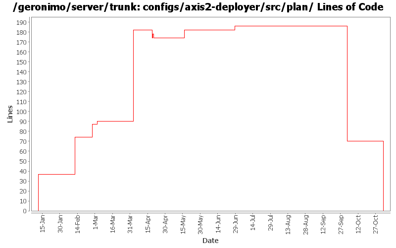

[root]/configs/axis2-deployer/src/plan

| Author | Changes | Lines of Code | Lines per Change |
|---|---|---|---|
| Totals | 18 (100.0%) | 302 (100.0%) | 16.7 |
| dims | 11 (61.1%) | 282 (93.4%) | 25.6 |
| dwoods | 1 (5.6%) | 8 (2.6%) | 8.0 |
| linsun | 2 (11.1%) | 5 (1.7%) | 2.5 |
| jdillon | 1 (5.6%) | 4 (1.3%) | 4.0 |
| kevan | 1 (5.6%) | 2 (0.7%) | 2.0 |
| gawor | 1 (5.6%) | 1 (0.3%) | 1.0 |
| prasad | 1 (5.6%) | 0 (0.0%) | 0.0 |
GERONIMO-3565. Configs distributed amongst framework/configs and plugins
0 lines of code changed in 1 file:
making axis2 intergration more modular: separated ejb bits from servlet bits.
1 lines of code changed in 1 file:
GERONIMO-3339 Update a few more dependencies from xmlbeans/xbean to org.apache.xmlbeans/xmlbeans. Jira is unavailable, at the moment, so i haven't updated the issue...
2 lines of code changed in 1 file:
need to update the httpcore here for the appclient.
1 lines of code changed in 1 file:
missed one spot for the new axis2 dependency - backport-util-concurrent
4 lines of code changed in 1 file:
GERONIMO-3124 Switch Axis2 stack back to axis2-saaj from Sun SAAJ Impl
8 lines of code changed in 1 file:
remove xalan dependency
0 lines of code changed in 1 file:
cleanup axis2 pom's/plan's
16 lines of code changed in 1 file:
Axis2 needs one more jar
4 lines of code changed in 1 file:
Switch Axis2 over to sun's saaj jars as well. Once we stabilize, we can switch back to see what breaks with Axis2's saaj impl jars
0 lines of code changed in 1 file:
need latest XmlSchema SNAPSHOT for Axis2
1 lines of code changed in 1 file:
let's try enumerating the jars instead of using the car
93 lines of code changed in 1 file:
Just the geronimo-axis2 jar is not enough, let's try adding dependency on the whole axis2/car (Thanks Jarek!)
4 lines of code changed in 1 file:
Std props
dos2unix on some files with inconsistent newlines
4 lines of code changed in 1 file:
Fix for GERONIMO-2913 - minor changes to JettyEJBWebServiceContext and TomcatEJBWebServiceContext for Axis2
Fix for GERONIMO-2914 - Axis2: a few changes to set the servicepath, contextroot correctly in EJB to allow getWSDL() test working correctly
Fix for GERONIMO-2894 - Restructure geronimo-axis2 code to split between EJB and POJO containers
Thanks a ton Lin.
1 lines of code changed in 1 file:
Fix for GERONIMO-2876 - Initial web service EJB support for Axis2
87 lines of code changed in 1 file:
Initial port of the serviceref and handler chain support (needs a lot of work/testing!)
39 lines of code changed in 1 file:
patch from Lin Sun for GERONIMO-2724 - create axis2 config and axis2-deployer config folders
37 lines of code changed in 1 file: